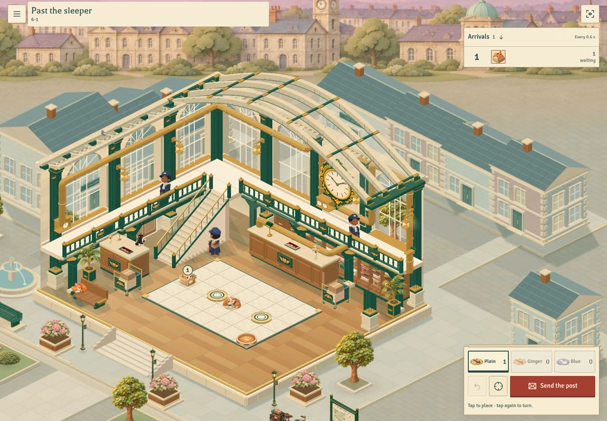
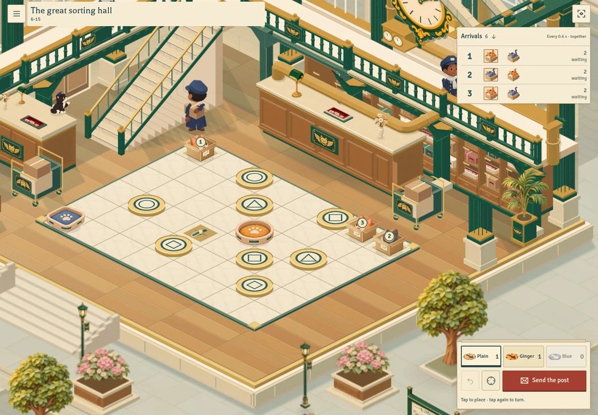

City Hall, side by side
The approved Great Postal Vault and the same room in the regular game. Each capture keeps its own controls.
Desktop, delivery 6–1
Room view at 1440 × 1000 CSS pixels. 2,341 of 1,440,000 scene pixels differ with the cameras aligned.



Desktop, delivery 6–15
Board view at 1440 × 1000 CSS pixels. 0 of 1,440,000 scene pixels differ with the cameras aligned.



Phone, delivery 6–1
Room view at 780 × 1688 CSS pixels. 1,239 of 1,316,640 scene pixels differ with the cameras aligned.


Phone, delivery 6–15
Board view at 780 × 1688 CSS pixels. 0 of 1,316,640 scene pixels differ with the cameras aligned.


Stair and gallery rail
The gold stair rail crosses in front of the green gallery rail.


Floor porter and stair
The porter walks in front of the foot of the stair.


Gallery worker and rail
The balustrade covers the lower half of the passing worker.